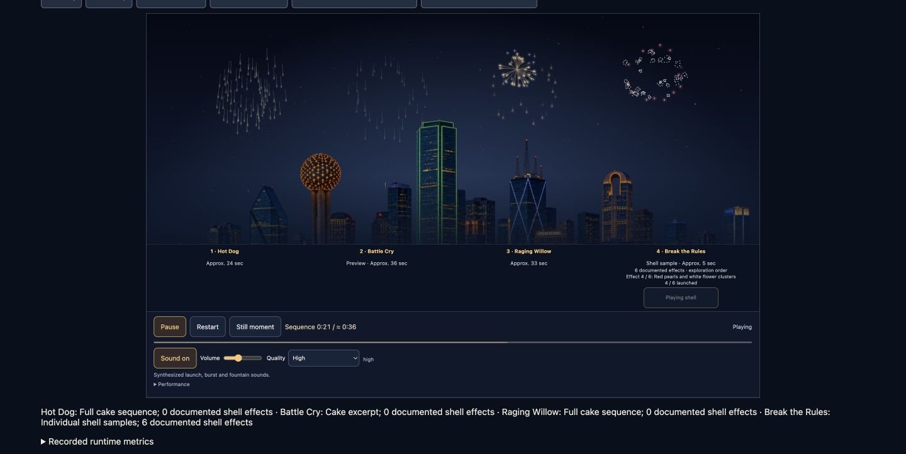
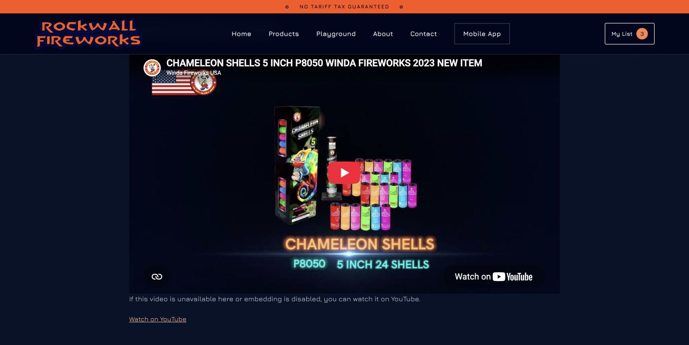

Rockwall Fireworks · September 27, 2026
New aerial demonstrations
Four products join the Playground: two cakes and two shell banks with 18 individually reviewed effects. The catalog now has 31 profiles.
Actual desktop UI capture, about 42 seconds, sampled at roughly 4 frames per second with original timing. Hot Dog, Battle Cry and Raging Willow play while Break the Rules launches independently. Includes pause, continuation and a shell after the cakes finish. Silent recording; digital audio signal was checked separately. Illustrative effects, not to scale.
Hot Dog
World-Class · 16-shot complete sequence.
Approx. 24 sec.
Explore Hot DogBattle Cry
Raccoon RA57203 · Eight observed openings from a nine-shot rack.
Preview · Approx. 36 sec.
Explore Battle CryBreak the Rules
Raccoon RA60601 · Six documented effects, six shells per pack. One break per sample.
Explore Break the RulesChameleon Shells
Winda P8050 · Twelve documented effects, 24 shells per pack. Exploration order, not official shell numbering.
Explore ChameleonColor and structure
Independent controls and Dallas foreground

One shared sky, separate sequences and counters. Effects remain behind the buildings.
Reference inside the product page

Watch the reference opens the exact product's video section. The player loads on request and does not autoplay.
Reviewed coverage
| Type | Profiles |
|---|
| Complete sequences | 10 |
| Excerpts | 8 |
| Sample profiles | 13, including 10 shell banks |
Web checks and 151 tests passed. App data and runtime are synchronized; TypeScript, lint and 66 tests passed. Native visual review was postponed at the user's request. No deployment or app publication.